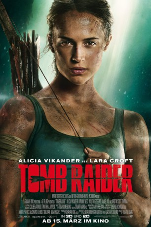

gesehen am 20.07.2018
gesehen am 20.07.2018 
 IMDB-Wertung: 6.4 / 10
IMDB-Wertung: 6.4 / 10  Tomatometer: 52
Tomatometer: 52  Metascore:
Metascore: 
Vor sieben Jahren verschwand Lord Richard Croft, der Vater der mittlerweile 21-jährigen Lara Croft , doch noch immer hat sie nicht die Kontrolle über dessen global agierendes Wirtschaftsimperium übernommen, sondern lebt als Studentin und Fahrradkurierin in London. Eines Tages beschließt Lara dann jedoch, dem Verschwinden ihres Vaters nachzuspüren, und reist dafür zu seinem letzten bekannten Aufenthaltsort, einer kleinen Insel vor der Küste von Japan. Dort hatte dieser ein geheimnisvolles Grabmal untersucht. Doch kaum auf der Insel angekommen, sieht sich Lara zahlreichen lebensbedrohlichen Gefahren ausgesetzt und sie muss bis an ihre Grenzen gehen und - ausgestattet lediglich mit ihrem scharfen Verstand und ihrem beträchtlichen Willen - um ihr Überleben kämpfen.
Jahr: 2018
Dauer: 118 Minuten
FSK: 12
Land: England Studio: Warner Bros.Tonspuren: DD5.1 - ,
Untertitel:
Auflösung: 1080p (1920x1080) Größe: 6778 MB
Genre: Action, Abenteuer, Fantasy
Regisseur: Roar Uthaug
Drehbuch: Geneva Robertson-Dworet
Soundtrack: Junkie XL
Darsteller:
Datei: X:\3-Trilogie(G-M)\Lara Croft Tomb Raider\Tomb Raider (2018, FSK12, 1920x1080) 3D.mkv seit 20.07.2018
Festplatte: HD Collection-2(A-Z)-3(A-M)
 Es gibt insgesamt 7 Filme in der Gruppe '3-Trilogie(G-M)\Lara Croft Tomb Raider'
Es gibt insgesamt 7 Filme in der Gruppe '3-Trilogie(G-M)\Lara Croft Tomb Raider'